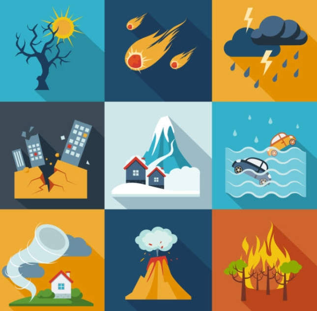
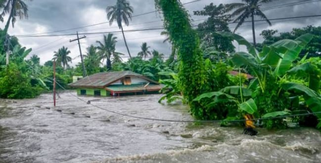
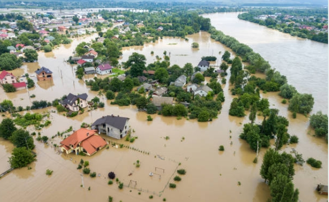
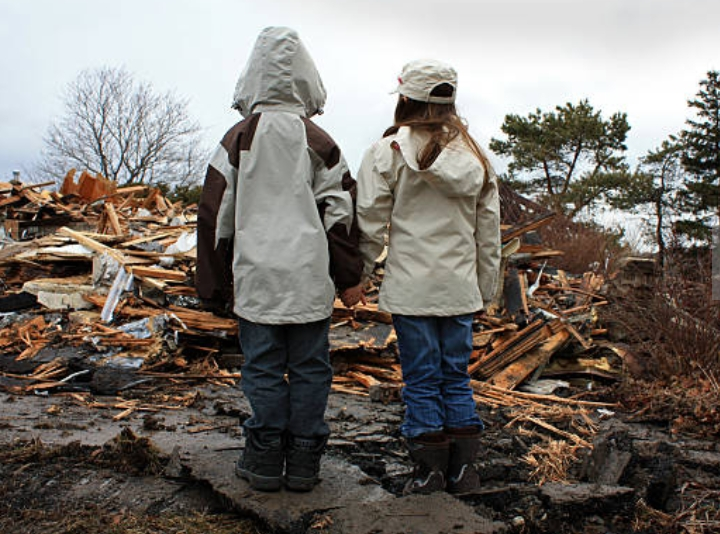
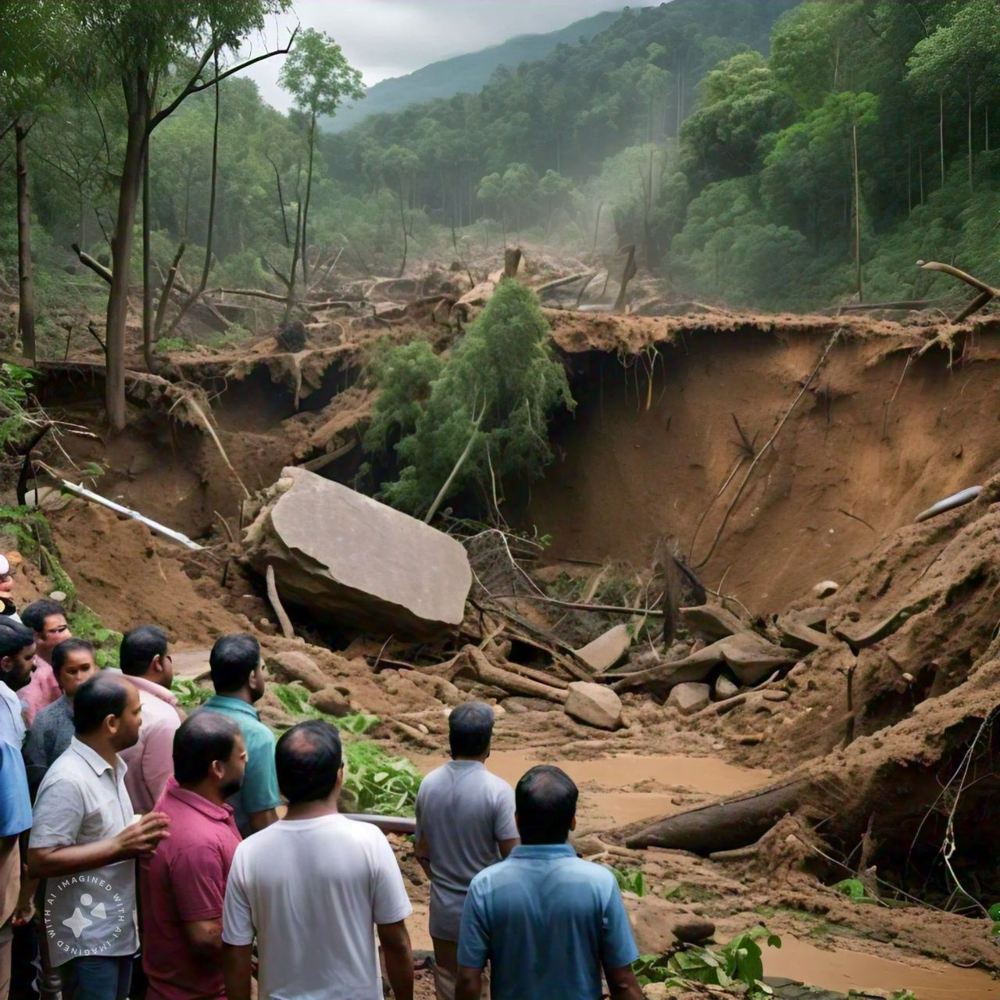
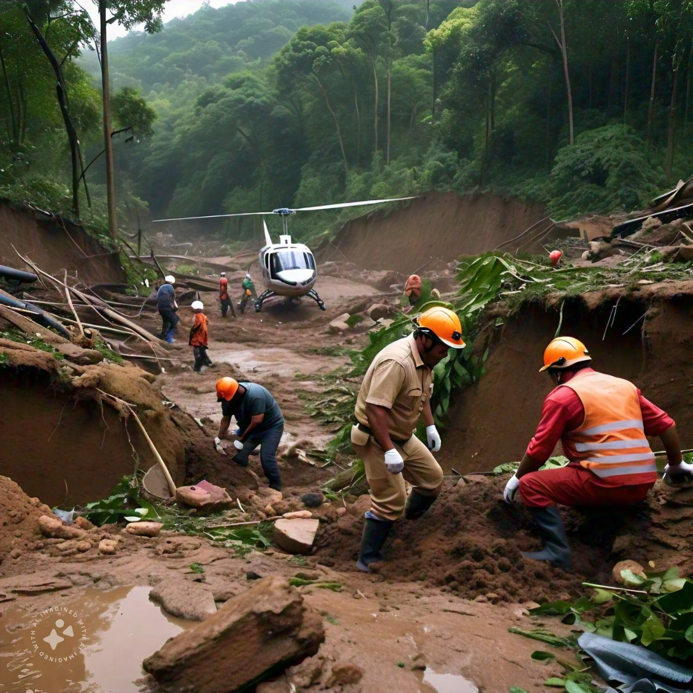

The world is facing an unprecedented environmental crisis, with far-reaching consequences for human health, economic development, and ecosystem balance. Climate change, pollution, deforestation, and biodiversity loss are just a few of the pressing environmental issues that demand immediate attention and collective action. As the global population continues to grow, the strain on natural resources intensifies, threatening the very foundation of our existence. This assignment delves into the complexities of environmental issues, exploring their causes, effects, and potential solutions. By examining the intricate relationships between human activities, natural systems, and environmental consequences, we can work towards a more sustainable future and ensure a healthy planet for generations to come.
Here are some types of natural disasters:

1. Geological Disasters:
- Earthquakes
- Volcanic eruptions
- Landslides
- Mudslides
- Rockfalls
2. Hydrological Disasters:
- Floods
- Tsunamis
- Droughts
- Wildfires (often triggered by drought)
3. Atmospheric Disasters:
- Hurricanes
- Tornadoes
- Cyclones
- Blizzards
- Ice storms
4. Climatological Disasters:
- Heatwaves
- Cold waves
- Droughts
- Desertification
5. Biological Disasters:
- Pandemics
- Epidemics
- Insect infestations
- Animal attacks (e.g., shark attacks, bear attacks)
6. Extraterrestrial Disasters:
- Meteorite impacts
- Asteroid impacts
- Solar flares
- Gamma-ray bursts
7. Other Disasters:
- Sinkholes
- Subsidence (sinkage of land surface)
- Wildfires (can be triggered by various factors)
 Here are some reasons that contribute to environmental issues:
1. Human Population Growth: Increased demand for resources, housing, and infrastructure. 2. Consumerism and Waste: Excessive consumption, single-use plastics, and waste disposal. 3. Industrialization and Pollution: Emissions, effluents, and waste from industrial processes. 4. Deforestation and Land Use: Clearing forests for agriculture, urbanization, and logging. 5. Climate Change: Global warming, rising temperatures, and extreme weather events. 6. Agricultural Practices: Intensive farming, monoculture, and excessive fertilizer use. 7. Urbanization and Development: Infrastructure expansion, resource extraction, and habitat destruction. 8. Lack of Regulations and Enforcement: Inadequate policies, monitoring, and enforcement. 9. Public Awareness and Education: Limited understanding of environmental issues and consequences. 10. Economic Priorities: Prioritizing economic growth over environmental protection. 11. Technological Advancements: Unintended environmental consequences of new technologies. 12. Natural Disasters: Climate-related disasters, wildfires, and other natural events. These factors often intersect and compound, leading to complex environmental issues. Addressing these underlying reasons is crucial for mitigating and resolving environmental problems.
   Wayanad, a picturesque district in Kerala, India, is known for its lush green forests, rolling hills, and diverse wildlife. However, this ecologically sensitive region is facing numerous environmental challenges that threaten its fragile ecosystem and human populations. Landslides, deforestation, soil erosion, and water pollution are some of the pressing issues that demand immediate attention. The consequences of these environmental issues are far-reaching, ranging from loss of biodiversity and ecosystem disruption to human health problems and economic losses. This report aims to explore the environmental issues in Wayanad, analyze their causes and effects, and suggest sustainable solutions to mitigate these problems and ensure a healthy and thriving environment for future generations.